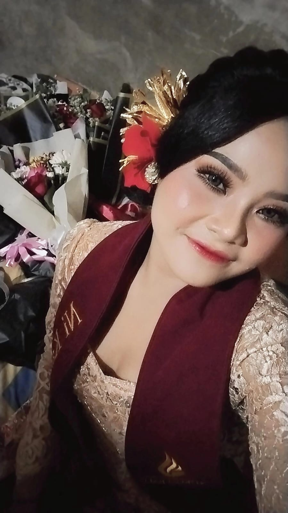

Mahasiswa Program Pendidikan Guru (PPG) Informatika
Asal Daerah
Klungkung, BALI
Inspirasi Menjadi Guru
Bagi saya, esensi tertinggi dari mendidik adalah kasih sayang yang memampukan. Kita tidak sedang mencetak robot yang mahir menghafal, melainkan sedang menuntun manusia-manusia muda agar siap mengarungi kehidupan. Ruang kelas adalah tempat di mana mereka belajar untuk berani mencoba, bangkit dari kegagalan, dan menemukan kekuatan dirinya. Karena pada akhirnya, keberhasilan seorang guru terlihat saat muridnya mampu berdiri mandiri dan membawa dampak baik bagi dunianya.
"Pendidikan adalah kunci pembuka pintu masa depan yang cerah bagi setiap individu."
— Nelson Mandela

Komitmen dan prinsip profesional sebagai calon pendidik
Menciptakan lingkungan belajar yang inklusif dan inovatif untuk mengembangkan potensi peserta didik secara maksimal dalam era digital.
Menguasai pemrograman, literasi digital, pedagogik digital, serta kemampuan berkomunikasi yang efektif dengan generasi Z.
Integritas, dedikasi, adaptif, dan selalu belajar untuk memberikan yang terbaik bagi peserta didik dan komunitas pendidikan.
(Praktik Pengalaman Lapangan) - Dokumentasi lengkap kegiatan dan hasil pembelajaran di lapangan
RPP disusun untuk kelas X TKJ dengan fokus pada materi jaringan komputer dasar yang disesuaikan dengan kurikulum 2013.
Peserta didik mampu memahami konsep jaringan komputer dan mengimplementasikannya dalam praktik laboratorium.
Pembelajaran berbasis proyek (Project Based Learning) dipilih karena terbukti meningkatkan engagement peserta didik dan mengembangkan keterampilan abad ke-21. Menurut Blumenfeld et al. (2006), PBL memberikan konteks bermakna yang membantu peserta didik menghubungkan konsep abstrak dengan aplikasi praktis.
Teori Dual Coding oleh Paivio (1991) menunjukkan bahwa informasi visual dan verbal yang diintegrasikan meningkatkan retensi memori. Media visual yang dirancang dengan prinsip gestalt dan kontras warna yang tepat dapat meningkatkan fokus dan pemahaman peserta didik hingga 65%.
Akses dokumentasi lengkap PPL dalam format PDF
Dokumentasi Proses Pembelajaran dan Evaluasi
Lampiran 7 memuat dokumentasi lengkap proses pembelajaran meliputi rencana harian, catatan observasi, dan hasil evaluasi peserta didik.
Unduh Lampiran 7 (PDF)Refleksi Diri & Pengembangan Profesional
Lampiran 8 berisi refleksi mendalam tentang pembelajaran yang dialami, tantangan yang dihadapi, dan rencana pengembangan profesional jangka panjang.
Unduh Lampiran 8 (PDF)Fokus pada perencanaan dan implementasi awal strategi pembelajaran berbasis proyek dengan evaluasi formatif.
Tanggal:
17 - 24 Agustus 2024
Hasil:
70% peserta didik mencapai KKM
Penyesuaian strategi berdasarkan refleksi Siklus 1 dengan penambahan scaffolding dan peer collaboration.
Tanggal:
24 - 31 Agustus 2024
Hasil:
85% peserta didik mencapai KKM
Optimalisasi dan konsolidasi dengan fokus pada pengembangan keterampilan tingkat tinggi dan transfer pengetahuan.
Tanggal:
31 Agustus - 7 September 2024
Hasil:
90% peserta didik mencapai KKM